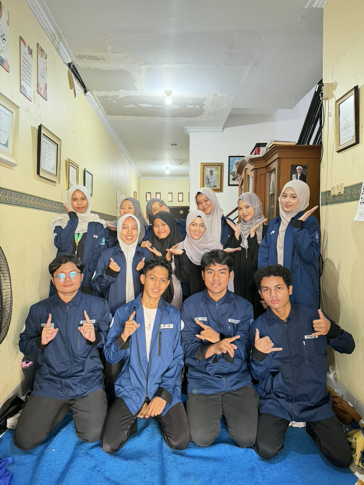
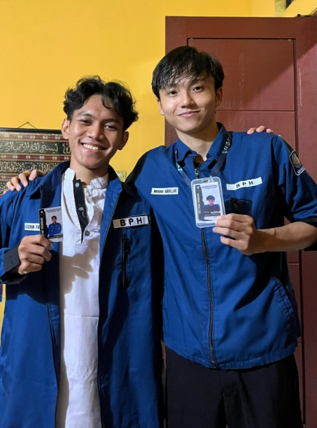

Visi
Membangun UKM Rohis UBSI yang menjalankan program sesuai dengan Al-Qur’an dan Sunnah.
Mengenal lebih dekat
Wadah bagi mahasiswa untuk belajar, bertumbuh, dan mempererat ukhuwah dalam suasana islami.
Membangun UKM Rohis UBSI yang menjalankan program sesuai dengan Al-Qur’an dan Sunnah.

